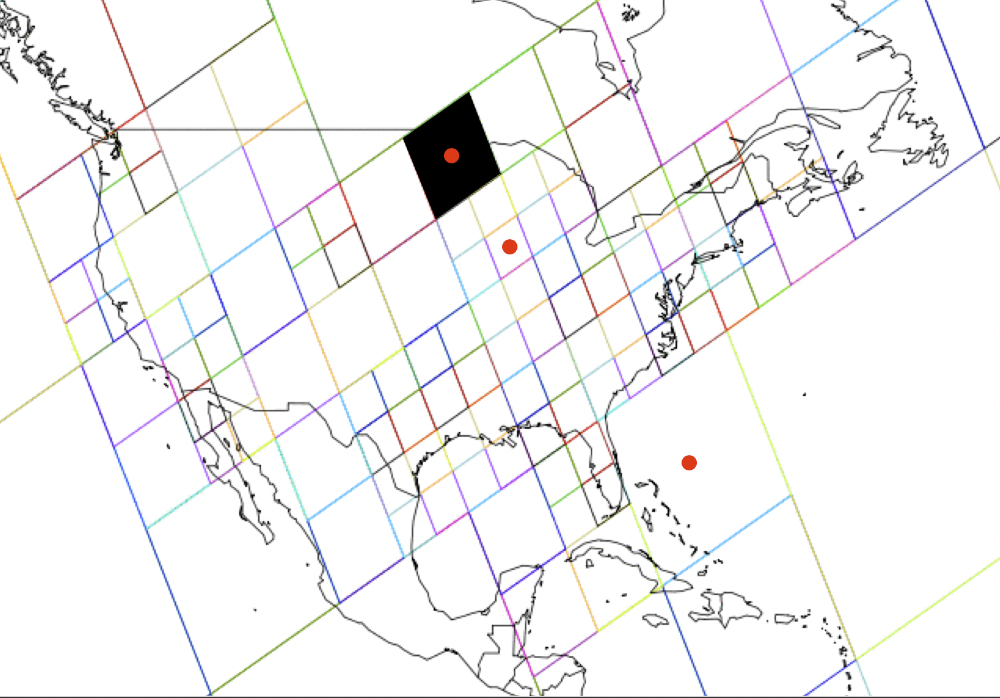
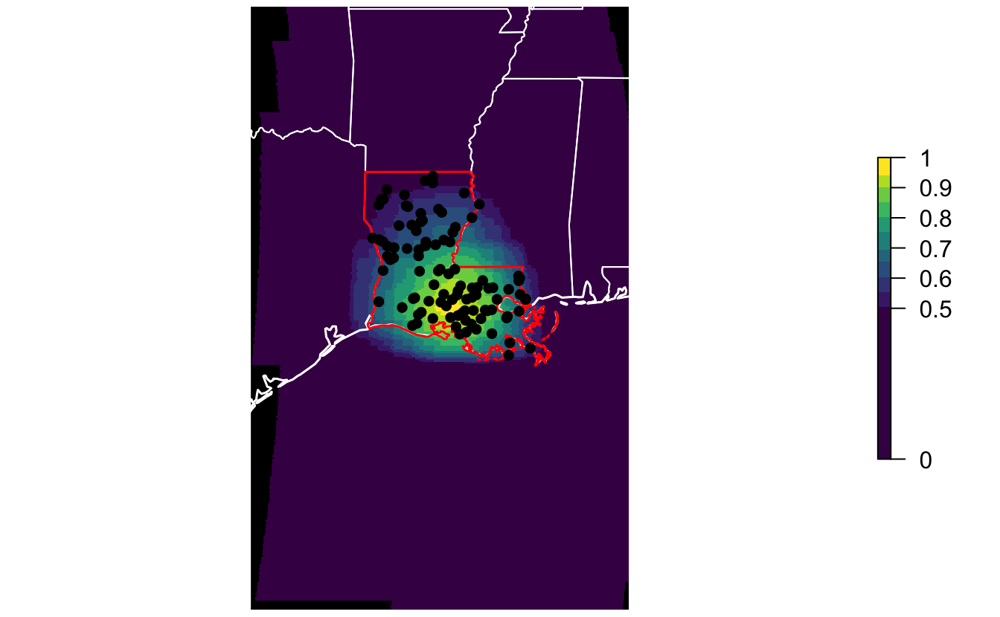
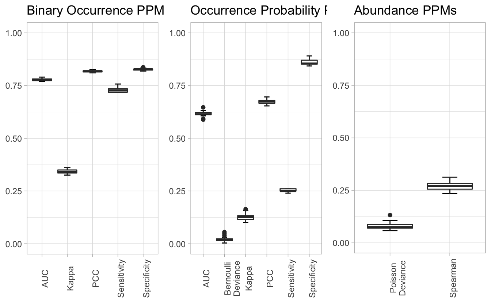
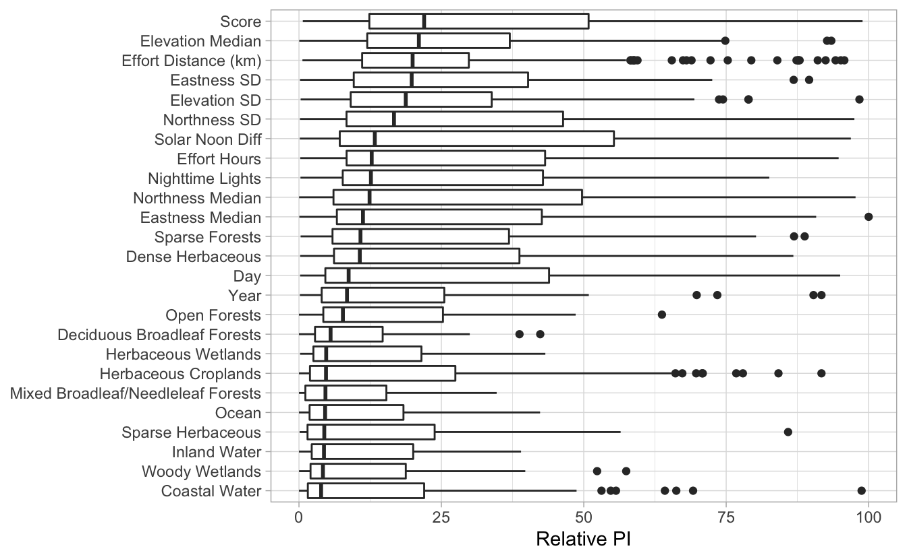

Lesson 4 Non-raster Data
4.1 Objective
To use the non-raster, centroid data as a diagnostic tool to assess predictive performance and identify the most important habitat predictors.
4.2 Introduction
If we use ebirdst_download(tifs_only = FALSE), the Status and Trends data packages that get downloaded will contain some addition data beyond the raster data we’ve already been working with. These data are provided at the level of the individual stixels that make up the ensemble which produces the abundance estimates. We often refer to these as “centroid” data because the centroids of the stixels are used to identify which stixel the values come from.

These data have a variety of uses, but we’ll focus on three here:
- Identifying the effective region from which information is going into the analysis
- Using predictive performance metrics as a diagnostic tool to assess model performance in a given region
- Identifying the most important habitat predictors in a given region
We’ll start be loading packages and defining a focal region and time period: Louisiana during the breeding season.
library(ebirdst)
library(raster)
library(sf)
library(rnaturalearth)
library(dplyr)
library(ggplot2)
# louisiana
la <- ne_states(iso_a2 = "US", returnclass = "sf") %>%
filter(name == "Louisiana")
# breeding season
logshr_run <- filter(ebirdst_runs, common_name == "Loggerhead Shrike")
start_dt <- logshr_run$breeding_start_dt
end_dt <- logshr_run$breeding_end_dt
# ebirdst_extent object
la_breeding_season <- ebirdst_extent(la, c(start_dt, end_dt))
# loggerhead shrike data path
sp_path <- get_species_path("logshr")4.3 Effective extent
For a given region and time period, calc_effective_extent() produces a map showing the centroids of all the stixels that comprise the model.

4.4 Predictive performance metrics
We can use plot_all_ppms() to assess model performance within a given region and season, here Louisiana during the breeding season.

4.5 Predictor importance
Finally, we can look at the most importance predictor variables identified by the model in a given region and season.
# load predictor importance data
pis <- load_pis(sp_path)
# plot the predictor importances for louisiana in the breeding season
plot_pis(pis, ext = la_breeding_season, by_cover_class = TRUE, n_top_pred = 25)